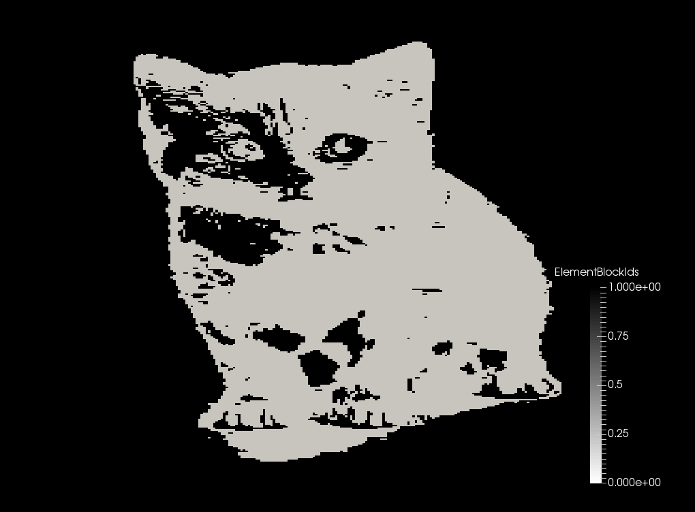

- inputThe mesh we want to modify
C++ Type:MeshGeneratorName
Controllable:No
Description:The mesh we want to modify
ImageSubdomainGenerator
Samples an image at the coordinates of each element centroid, using the resulting pixel color value as each element's subdomain ID
Example Syntax
Normal usage of ImageSubdomainGenerator involves creation of a standard mesh (in the example, GeneratedMeshGenerator), using that mesh as the input for ImageSubdomainGenerator, and providing an image to sample. See an example below:
[Mesh<<<{"href": "../../syntax/Mesh/index.html"}>>>]
[gen]
type = GeneratedMeshGenerator<<<{"description": "Create a line, square, or cube mesh with uniformly spaced or biased elements.", "href": "GeneratedMeshGenerator.html"}>>>
dim<<<{"description": "The dimension of the mesh to be generated"}>>> = 2
nx<<<{"description": "Number of elements in the X direction"}>>> = 41
ny<<<{"description": "Number of elements in the Y direction"}>>> = 41
[]
[./image]
input<<<{"description": "The mesh we want to modify"}>>> = gen
type = ImageSubdomainGenerator<<<{"description": "Samples an image at the coordinates of each element centroid, using the resulting pixel color value as each element's subdomain ID", "href": "ImageSubdomainGenerator.html"}>>>
file<<<{"description": "Name of single image file to extract mesh parameters from. If provided, a 2D mesh is created."}>>> = kitten.png
threshold<<<{"description": "The threshold value"}>>> = 100
[../]
[]commentnote
In this example, the parameter threshold is used. This sets a color value above which the subdomain ID is set to upper_value (default = 1) and below which the subdomain ID is set to lower_value (default = 0). More information about these and other extended parameters can be seen below in the Input Parameters section.
Input Image (kitten.png)
Mesh Subdomain ID Output

Input Parameters
- componentThe image RGB-component to return, leaving this blank will result in a greyscale value for the image to be created. The component number is zero based, i.e. 0 returns the first (RED) component of the image.
C++ Type:unsigned int
Controllable:No
Description:The image RGB-component to return, leaving this blank will result in a greyscale value for the image to be created. The component number is zero based, i.e. 0 returns the first (RED) component of the image.
- dimensionsx,y,z dimensions of the image (defaults to mesh dimensions)
C++ Type:libMesh::Point
Controllable:No
Description:x,y,z dimensions of the image (defaults to mesh dimensions)
- fileName of single image file to extract mesh parameters from. If provided, a 2D mesh is created.
C++ Type:FileName
Controllable:No
Description:Name of single image file to extract mesh parameters from. If provided, a 2D mesh is created.
- file_baseImage file base to open, use this option when a stack of images must be read (ignored if 'file' is given)
C++ Type:FileNameNoExtension
Controllable:No
Description:Image file base to open, use this option when a stack of images must be read (ignored if 'file' is given)
- file_rangeRange of images to analyze, used with 'file_base' (ignored if 'file' is given)
C++ Type:std::vector<unsigned int>
Controllable:No
Description:Range of images to analyze, used with 'file_base' (ignored if 'file' is given)
- file_suffixSuffix of the file to open, e.g. 'png'
C++ Type:std::string
Controllable:No
Description:Suffix of the file to open, e.g. 'png'
- originOrigin of the image (defaults to mesh origin)
C++ Type:libMesh::Point
Controllable:No
Description:Origin of the image (defaults to mesh origin)
Optional Parameters
- enableTrueSet the enabled status of the MooseObject.
Default:True
C++ Type:bool
Controllable:No
Description:Set the enabled status of the MooseObject.
- save_with_nameKeep the mesh from this mesh generator in memory with the name specified
C++ Type:std::string
Controllable:No
Description:Keep the mesh from this mesh generator in memory with the name specified
Advanced Parameters
- flip_xFalseFlip the image along the x-axis
Default:False
C++ Type:bool
Controllable:No
Description:Flip the image along the x-axis
- flip_yFalseFlip the image along the y-axis
Default:False
C++ Type:bool
Controllable:No
Description:Flip the image along the y-axis
- flip_zFalseFlip the image along the z-axis
Default:False
C++ Type:bool
Controllable:No
Description:Flip the image along the z-axis
Flip Parameters
- lower_value0The value to set for data less than the threshold value
Default:0
C++ Type:Real
Unit:(no unit assumed)
Controllable:No
Description:The value to set for data less than the threshold value
- thresholdThe threshold value
C++ Type:Real
Unit:(no unit assumed)
Controllable:No
Description:The threshold value
- upper_value1The value to set for data greater than the threshold value
Default:1
C++ Type:Real
Unit:(no unit assumed)
Controllable:No
Description:The value to set for data greater than the threshold value
Threshold Parameters
- nemesisFalseWhether or not to output the mesh file in the nemesisformat (only if output = true)
Default:False
C++ Type:bool
Controllable:No
Description:Whether or not to output the mesh file in the nemesisformat (only if output = true)
- outputFalseWhether or not to output the mesh file after generating the mesh
Default:False
C++ Type:bool
Controllable:No
Description:Whether or not to output the mesh file after generating the mesh
- show_infoFalseWhether or not to show mesh info after generating the mesh (bounding box, element types, sidesets, nodesets, subdomains, etc)
Default:False
C++ Type:bool
Controllable:No
Description:Whether or not to show mesh info after generating the mesh (bounding box, element types, sidesets, nodesets, subdomains, etc)
Debugging Parameters
- scale1Multiplier to apply to all pixel values; occurs after shifting
Default:1
C++ Type:Real
Unit:(no unit assumed)
Controllable:No
Description:Multiplier to apply to all pixel values; occurs after shifting
- shift0Value to add to all pixels; occurs prior to scaling
Default:0
C++ Type:Real
Unit:(no unit assumed)
Controllable:No
Description:Value to add to all pixels; occurs prior to scaling